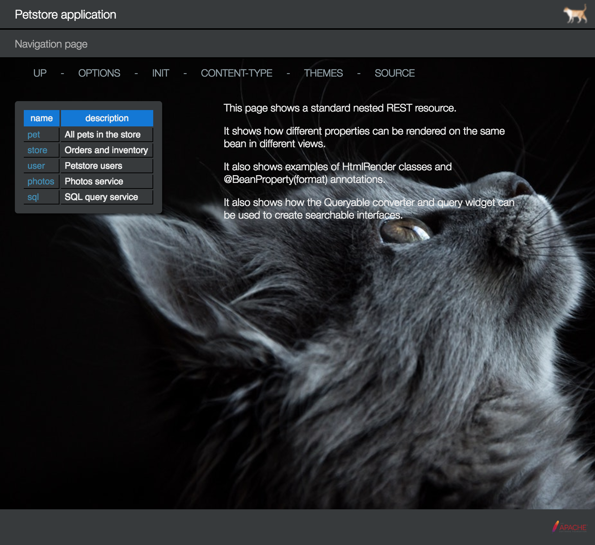

The PetStoreResource class provides examples of the following:
Pointing a browser to the resource shows the following:
http://localhost:10000/petstore

Clicking the QUERY link renders the following menu pop-up complete with tooltips:

The STYLES menu item allows you to try out the other default look-and-feels: